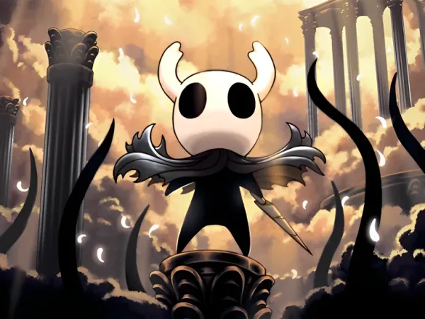

Knight
O Knight é um Vessel silencioso nascido no Abismo. Apesar de não possuir voz ou gênero, é o protagonista de Hollow Knight, encarregado de selar a Radiance e proteger Hallownest.
Knight

Espécie: Vessel
Gênero: Sem gênero
Origem: Abismo
Pai: Rei Pálido
Mãe: Dama Branca